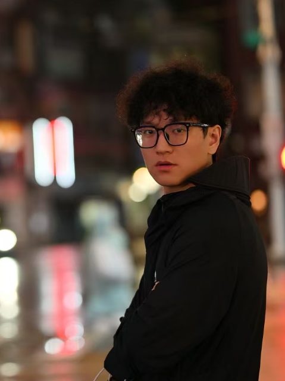
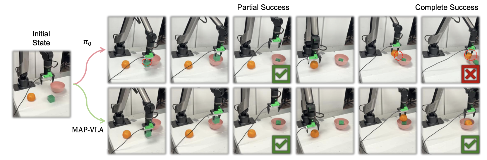
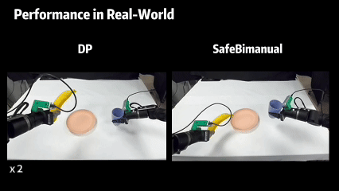

|
Guo Wenkai (郭文锴) I'm currently a first-year PhD student at Nanyang Technological University in Singapore, where I am supervised by Professor Wang Ziwei. Previously, I graduated as a Master of Science (MSc) from Nanyang Technological University. I received my Bachelor of Engineering (BEng) degree in School of Automation at Southeast University, supervised by Professor Li Shihua, Professor Du Songlin, and Professor Wang Yangang. My research focuses on vision-language-action models and reinforcement learning in robotic manipulation. Email / Google Scholar / LinkedIn / GitHub |
 |
{kind=link}
News
|
Recent WorksMy research interests lie in robotic manipulation, vision-language-action models, and reinforcement learning. I aim to build intelligent robots that can perform complex manipulation tasks in real-world environments. |

|
VLA-Reasoner: Empowering Vision-Language-Action Models with Reasoning via Online Monte Carlo Tree Search
Wenkai Guo*, Guanxing Lu*, Haoyuan Deng, Zhenyu Wu, Yansong Tang, Ziwei Wang ICRA, 2026 project page / arXiv / code A plug-in framework that empowers VLA models with reasoning capabilities through online Monte Carlo Tree Search, enabling robots to foresee future states and search for optimal actions. |
|
 |
Map-VLA: Memory-Augmented Prompting for Vision-Language-Action Model in Robotic Manipulation
Runhao Li, Wenkai Guo, Zhenyu Wu, Changyuan Wang, Haoyuan Deng, Zhenyu Weng, Yap-Peng Tan, Ziwei Wang ICRA, 2026 project page / arXiv A memory-augmented prompting framework that enhances VLA models with episodic memory for improved generalization in robotic manipulation. |
|
 |
SafeBimanual: Diffusion-based Trajectory Optimization for Safe Bimanual Manipulation
Haoyuan Deng, Wenkai Guo, Qianzhun Wang, Zhenyu Wu, Ziwei Wang CoRL, 2025 project page / arXiv A diffusion-based framework for safe bimanual manipulation that optimizes collision-free trajectories while ensuring task success. |
|
VLA-RL: Towards Masterful and General Robotic Manipulation with Scalable Reinforcement Learning
Guanxing Lu, Wenkai Guo, Chubin Zhang, Yuheng Zhou, Haonan Jiang, Zifeng Gao, Yansong Tang, Ziwei Wang arXiv, 2025 project page / arXiv A scalable reinforcement learning framework for VLA models that achieves masterful manipulation through efficient online learning. |
Academic ServicesJournal Reviewer: RA-L (IEEE Robotics and Automation Letters) Conference Reviewer: ICCV (International Conference on Computer Vision) |
|
Page views since February 2026 |
|
Website template from Jon Barron. Last updated: February 2026. |